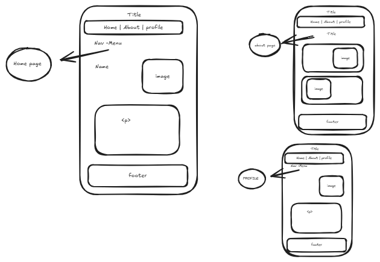

My Markup Drawing & Design Process
Before writing any code, I start by sketching out the basic structure of the website. Here's how I approached it:

- Home Page: I began by outlining the layout of the homepage, defining the key sections and features I wanted to include.
- About Page: Next, I drew the design for the About page, focusing on how to present the tools and techniques I used in an engaging way.
- Profile Page: After that, I planned out the Profile page, mapping out how to display information about myself in a clear and organized manner.
After the main pages were sketched, I moved on to add key elements like:
- Menu: A navigation bar that helps users easily move between the homepage, about page, and profile.
- Footers: Important links and information placed at the bottom of every page to keep the website connected and consistent.
- images: adding images that help to create more visualization to Webpages
Through this process, I ensure every element is thoughtfully placed and serves a purpose, making the website easy to navigate and user-friendly.
the mockups were done using excalidraw website
if you want to learn about this website go to click here in this link excalidraw.com